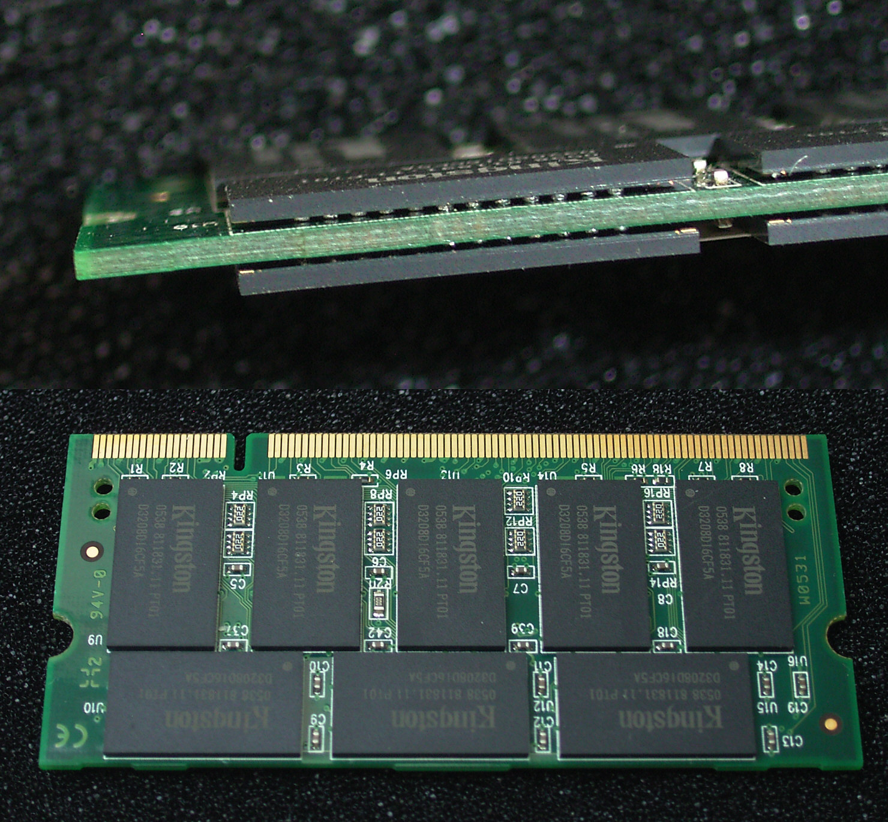

La memoria de acceso aleatorio (Random Access Memory, RAM) se utiliza como memoria de trabajo de computadoras para el sistema operativo, los programas y la mayor parte del software.
En la RAM se cargan todas las instrucciones que ejecutan la unidad central de procesamiento (procesador) y otras unidades del computador.
Se denominan «de acceso aleatorio» porque se puede leer o escribir en una posición de memoria con un tiempo de espera igual para cualquier posición, no siendo necesario seguir un orden para acceder (acceso secuencial) a la información de la manera más rápida posible.
Durante el encendido de la computadora, la rutina POST verifica que los módulos de RAM estén conectados de manera correcta. En el caso que no existan o no se detecten los módulos, la mayoría de tarjetas madres emiten una serie de sonidos que indican la ausencia de memoria principal. Terminado ese proceso, la memoria BIOS puede realizar un test básico sobre la memoria RAM indicando fallos mayores en la misma.

{kind=link}